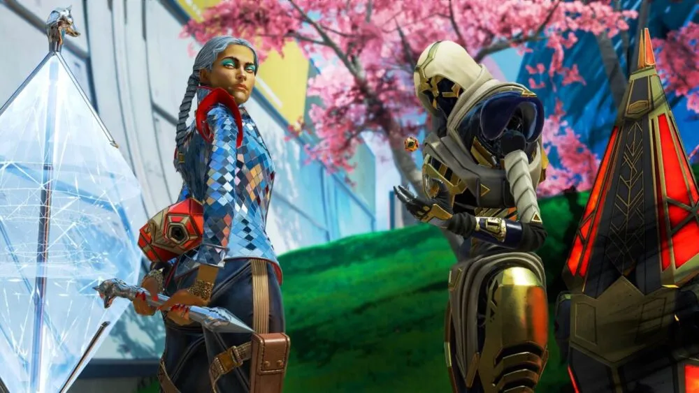

Apex Legends es un videojuego gratuito perteneciente a los géneros battle royale y hero shooter en primera persona, desarrollado por Respawn Entertainment y publicado por Electronic Arts. Fue lanzado para Microsoft Windows, PlayStation 4 y Xbox One el 4 de febrero de 2019. En julio de 2020 se anunció que el título llegaría a Steam a finales de 2020, junto al juego cruzado entre las plataformas. El 9 de marzo de 2021, el juego llegó a Nintendo Switch. Una campaña publicitaria centrada en youtubers y jugadores profesionales, consiguió atraer 1 millón de jugadores únicos en ocho horas, 2,5 millones en el primer día y 50 millones en tres días. El 7 de marzo de 2022 el juego sería lanzado en formato de "lanzamiento regional limitado" para teléfonos inteligentes en algunos países seleccionados, y posteriormente sería lanzado de manera global, este port está desarrollado por Tencent aunque es supervisado por el mismo Respawn. Mientras Respawn había estado trabajando en los esfuerzos para lograr una segunda secuela en la serie Titanfall, el éxito del género Battle Royale los llevó a volver a trabajar los elementos de Titanfall en un género de Battle Royale, pero manteniendo su propia esencia. Apex Legends superó los 25 millones de jugadores al final de su primera semana y los 50 millones en su primer mes. Para abril de 2021, tenía más de 100 millones de jugadores, lo que lo convierte en uno de los videojuegos más jugados de todos los tiempos por número de jugadores.
Apex Legends™


MÁS ALLÁ DEL BATTLE ROYALE
Apex Legends evoluciona constantemente. ¡Juega en partidas Battle Royale clásicas para 60 personas, en las zonas de combate y modos por tiempo limitado!
TEMPORADAS
- Temporada 0 (o pretemporada): Trajo consigo el "Rifle Havoc", y la reliquia de Wraith, además había 8 leyendas de las 18 que hay actualmente. El mapa para jugar era “Cañón de los reyes” Esta temporada duró desde el 04/02/19 hasta el 19/03/19
- Temporada 1 “Frontera Salvaje”: Trajo consigo a una nueva leyenda “Octane” además del pase de batalla vigente. Esta temporada duró desde el 19/03/19 hasta el 18/06/19.
- Temporada 2 “Carga de Batalla”: Trajo consigo a una nueva leyenda “Wattson”, una nueva arma la “L-Star EMG”, se añadió el pase de batalla vigente y también se añadieron los gestos de vuelo, las pantallas de carga personalizadas, paquetes de música, nuevo loot y las rankeds de la temporada. También hubo un evento en el cual se añadió la reliquia de Bloodhound. Se añadió una variación al mapa “Cañón de los reyes” Esta temporada duró desde el 02/07/19 hasta el 01/10/19.
- Temporada 3 “Fusión”: Trajo consigo a una nueva leyenda “Crypto”, una nueva arma el “Rifle de Cargas”, se añadió el pase de batalla vigente y también se añadieron los amuletos, se añadió también las rankeds de la temporada y se añadió nuevo loot. Hubo varios eventos en los cuales añadieron la reliquia de Lifeline y Pathfinder. Se añadió un nuevo mapa “Fin del mundo” Esta temporada duró desde el 01/10/19 hasta el 04/02/20.
- Temporada 4 “Asimilación”: Trajo consigo a una nueva leyenda “Revenant”, una nueva arma la “Sentinel”, se añadió el pase de batalla vigente además de las rankeds de la temporada las cuales llegaron con añadidos puesto que agregaron el nivel “maestro” y agregaron las divisiones de nivel (en un mismo nivel hay diferentes subniveles, del 1 al 4), se agregó nuevo loot. Hubo varios eventos en los cuales agregaron ellos Evo escudos (cuanto más daño hagas más nivel de escudo y mejor escudo tendrás.) También se añadió la reliquia de Octane y los fragmentos de reliquia los cuales sirven para comprar la reliquia que tu quieras. Se añadieron los dúos (solo podías jugar en tríos hasta este evento) se añadió la rotación de mapas y se añadió las pruebas de Bloodhound. Se añadió una variación al mapa de “Fin del mundo” Esta temporada duró desde el 04/02/20 hasta el 12/05/20.
- Temporada 5 “Favor y Fortuna”: Trajo consigo a una nueva leyenda “Loba”, se añadió el pase de batalla con su respectivas rankeds se añadieron también las interacciones entre leyendas y las misiones que prevalecen hasta el día de hoy. Hubo un evento en el cual se añadió las balizas de reaparición móvil (las cuales siguen en el juego) y la reliquia de Mirage. Se añadió una variación al mapa de “Cañón de los reyes” La temporada duró desde el día 12/05/20 hasta el 18/08/20.
- Temporada 6 “A tope”: Trajo consigo una nueva leyenda “Rampart”, se añadió una nueva arma la “Volt SMG”, se añadió también el pase de batalla el cual traía la novedad de los Espráis Holográficos se añadieron las rankeds de la temporada, se añadió el sistema de crafteo que depende de materiales, para fabricar componentes de armas y accesorios como mochilas, cascos, etc. en máquinas duplicadoras la cuales están esparcidas por el mapa. Además, trajo también una nueva misión. Hubo un evento en el cual se añadió la reliquia de Caustic junto con el crossplay entre consolas. Se añadió una variación al mapa “Fin del mundo”. Esta temporada duró desde el 18/08/20 hasta el 04/11/20.
- Temporada 7 “Ascensión”: Trajo consigo a una nueva leyenda “Horizon”, se añadió el pase de batalla además de subías de nivel consiguiendo estrellas, se añadieron las rankeds de temporada, y se añadió también nuevo loot. Los grandes añadidos fueron el añadido de los clubs y su salida en la plataforma de Steam. Se añadió también una nueva misión. Hubo un evento en el cual se añadió la reliquia de Gibraltar, y se añadió un nuevo mapa “Olympus”. Esta temporada duró desde el 04/11/20 hasta el 02/02/21.
- Temporada 8 “Estragos”: Trajo consigo una nueva leyenda “Fuse” se añadió una nueva arma el “Rifle de repetición 30-30” Se añadió el pase de batalla y sus respectivas rankeds, se añadió también nuevo loot y una nueva misión. Hubo un evento en el cual marcó la salida del juego para Nintendo Switch, también se añadieron un nuevo objeto el “escudo térmico”, el “hueco de supervivencia”, la opción de no rellenar el matchmaking, y la reliquia de Bangalore. Se añadió una variación al “Cañón de los reyes”. Esta temporada duro desde el 02/02/21 hasta el 04/05/21.
- Temporada 9 “Legado”: Trajo consigo a una nueva leyenda “Valkyrie” se añadió una nueva arma el “Arco Bocek” se añadió el pase de batalla junto con sus respectivas rankeds. Introdujo un nuevo modo de juego “Arenas” y se añadieron nuevos mapas al susodicho modo de juego. Se añadió nuevo loot, gestos para las leyendas y una nueva misión. Hubo un evento en el cual se añadió la reliquia de Revenant. Y hubo otro evento en el cual se añadió un nuevo mapa para Arenas. Esta temporada duró desde el 04/05/21 hasta el 03/08/21.
- Temporada 10 "Eclosión": Trajo consigo a una nueva leyenda “Seer” se añadió una nueva arma la “LMG Rampage”, se añadió el pase de batalla con sus respectivas rankeds. Se añadió nuevo Loot, hubo eventos flash para las arenas. Hubo un evento de un town takeover de Rampart y se añadió su reliquia. También hubo cambios en el mapa de “Fin del mundo”. En esta temporada se descarta los cómics de lore del juego, ya que ahora se distribuyen como cortometrajes en Twitter, se liberan en el perfil de Apex Legends (@playApex) y Respawn (@Respawn). Esta temporada duró desde el 03/08/21 hasta el 02/11/21.
- Temporada 11 "Escape": Trae consigo a la leyenda, Ash, traída desde Titanfall 2 junto con el nuevo arma, la C.A.R SMG, la cual puede utilizar munición pesada y ligera; por otro lado, también se añadió el nuevo mapa disponible llamado "Punto Tormenta".
- Temporada 12 "Disidencia": Se presenta una nueva leyenda llamada Mad Maggie, una vieja amiga de Fuse, responsable de la destrucción del mapa de la temporada 8 y que se hizo cargo brevemente de los juegos de Apex. La temporada comienza con un período de tres semanas de un modo de juego por tiempo limitado llamado "Control", un 9v9 donde los jugadores tienen que controlar las zonas A, B y C para obtener puntos. Olympus fue el mapa que recibió una actualización añadiendo la toma de ciudad de Lifeline; La temporada llegó durante el tercer aniversario por lo que se llevó a cabo un evento donde los jugadores podían obtener recompensas creadas por miembros de la comunidad, basadas en diversas leyendas.
- Temporada 13 "Salvadores": Se presenta a la nueva leyenda, Newcastle, el hermano desaparecido de Bangalore debuta en los juegos del Apex suplantando a un antiguo subcampeón. También se añadió una actualización para el mapa “Punto Tormenta”, se añaden centros de motín y un enorme monstruo asesinado en la costa oeste.
- Temporada 14 "Cacería": Se presenta a la nueva leyenda de rastreo, Vantage, quien llega para poner patas arriba el meta como un personaje que gira alrededor del arquetipo de francotirador, además “Cañón de los Reyes” tiene una actualización agregando las zonas de “Villa calavera” y “Cúpula”. El nivel máximo a conseguir en el juego fue aumentado, ahora se podrá llegar al nivel 500 un total de 3 veces y se recibirán más paquetes gratuitos.
- Temporada 15 "Eclipse": Se presenta a la nueva leyenda, Catalyst, con ella se estrena el nuevo mapa llamado “Luna Rota”, además fueron introducidas las pegatinas como cosméticos para los objetos de curación, la posibilidad de regalar cosméticos a tus amigos y en el campo de tiro todas las leyendas estarán desbloqueadas.
- Temporada 16 "Jolgorio": Por primera vez en la historia del videojuego no fue introducida una nueva leyenda, en su lugar se hizo un enorme rework a algunas las leyendas y sus clases, cambiando por completo el cómo funcionaban desde sus inicios, ahora habrá 5 clases: control, soporte, movimiento, asalto y rastreo, cada una de estas con habilidades pasivas exclusivas. Consigo, viene la nueva arma de energía, Nemesis, la cual se hace más veloz cada que aciertes disparos; por otro lado, el modo “Arenas” es retirado definitivamente y debuta el modo “Batalla a muerte por equipos” el cual es un modo 6v6, teniendo como ganador al equipo que obtenga más puntos por muertes; así mismo, se añadirá el “Mixtape”, este tendrá todos los modos de juego limitados en rotación. El modo competitivo no tendrá mapas específicos, pues ahora rotarán cada 24 horas, mientras que en el modo “Battle Royal” se introducirán bots y desafíos, los cuales servirán para que los nuevos jugadores aprendan las mecánicas del juego para prepáralos contra los jugadores experimentados, además de que el modelo de matchmaking mejorará. El campo de tiro ahora tendrá munición infinita y la opción de personalizar a los dummies.
LAS LEYENDAS
Elige entre un elenco de forajidos, soldados, rebeldes y misántropos, cada uno con sus propias habilidades. Los Juegos Apex están abiertos a todo el mundo. Si sobrevives lo suficiente, te convertirás en una leyenda.

REQUISITOS DEL SISTEMA
REQUISITOS MINIMOS
- Sistema operativo: Windows 7 de 64 bits
- Procesador: Intel Core i3-6300 3,8 GHz/AMD FX-4350 4,2 GHz con procesador de 4 núcleos
- Memoria: 6 GB de RAM
- Tarjeta gráfica: NVIDIA GeForce GT 640/Radeon HD 7730
- DirectX: tarjeta de video compatible con 11.0 o equivalente
- Conexión a Internet: Conexión de banda ancha a Internet
- Espacio de Disco Duro: Al menos 22 GB
REQUISITOS RECOMENDADOS
- Sistema operativo: Windows 7 de 64 bits
- Procesador: Intel i5 3570K o AMD Ryzen 3 1200
- Memoria: 8 GB de RAM
- Tarjeta gráfica: Nvidia GeForce GTX 970/AMD Radeon R9 290
- DirectX: tarjeta de video compatible con 11.1 o equivalente
- Conexión a Internet: Conexión de banda ancha a Internet
- Espacio de Disco Duro: Al menos 22 GB